충남대학교 컴퓨터공학과 이규철 교수님의 "웹 프로그래밍" 강의를 필기한 내용입니다.
다소 잘못된 내용과 구어적 표현 이 포함되어 있을 수 있습니다.
Form request handling
$_POST["name"]
$_GET["name"]
$_REQUEST["name"] // 이건 $_SERVER["REQUEST_METHOD"]로 요청 메소드를 확인해주는 작업이 선행되어야 함html 코드를 심어 공격하는 것에 대한 대응
- 서버로 전달되는 값에 html, js코드를 넣어 전달하게 되면 그것을 제대로 처리하지 못했을 경우 해당 코드가 실행되며 공격을 당할 수 있다
- 이러한 공격을 Cross-site Scripting attacks(XSS) 라고 부른다
- 어떠한 값을 서버로 전달하는 것은 주소를 통해 전달하는 것과 input 태그를 이용해 전달하는 것이 있으므로 이런 것을 이용해 공격을 하게 된다.
- 주소를 이용해 전달하는 경우
- 일단
$_SERVER[“PHP_SELF”]를 통해 자신의 경로를 불러오는 기능을 사용할 경우 - 브라우져의 주소에 코드를 입력하여 그것을 실행시키는 것이 가능함
- 일단
- input태그를 이용해 전달하는 경우
- input태그 안에 코드를 입력하여 서버로 보내는 경우 그것이 실행될 가능성이 있다
- 따라서 뭐 익히 알겠지만 html 태그를 구성하는
<와>를 다른 문자로 바꿔주면 이러한 공격을 막을 수 있음- 뭐
<는<,>는>로 바꾸면 겉모습은 그대로 보이지만 html태그로는 인식하지 않는다
- 뭐
- 이런 겉모습은 동일하지만 html태그로는 인식하지 않게 하기 위한 특수문자를 html special characters라고 한다.
XSS를 방어하는 방법
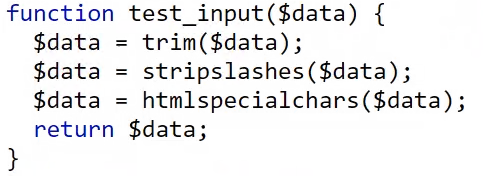
- 일단 위의 코드는 그냥 거의 외워둬라
- 하나씩 보면
trim()을 통해 양옆의 whitespace를 전부 다 지우고stripslashes()를 통해 html로 오인할 수 있는 백슬래시를 전부 제거하고htmlspecialchars()를 이용해 전부 html special characters로 바꿀 수 있음
Validate function
empty()함수를 통해 빈 값인지 확인하거나- preg_match()함수를 통해 정규식을 매칭할 수도 있다
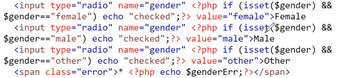
- 일단 위의 코드
isset()함수는 해당 변수가 선언이 되어있냐는 뜻이고- 위에서 보는 것처럼
echo …를 통해 html 중간에 값을 띄워줄 수 있다 → 위의 코드에서는echo “checked”;를 통해 해당 input radio가 checked라는 attribute를 가지도록 설정해주는 용도로 사용된 것 - 그래서 위의 코드는 submit을 눌렀을때 선택한 input radio의 checked attribute가 true로 바뀌고 따라서 html이 다시 랜더링됐을 때 input radio가 체크된 상태로 유지시키려는 의도이다.
Date & Time
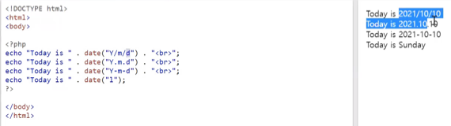
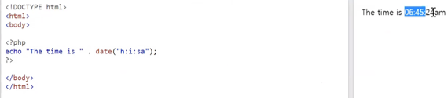
- 일단 어케 쓰는지는 알것제
- 뭐 인자로 넘겨주는 포매팅은 인터넷 검색해라
- 그리고 이때의 시간은 서버의 시간을 의미한다.
date_default_timezone_set("Asia/Seoul")을 통해 타임존을 바꿔줄 수도 있다.
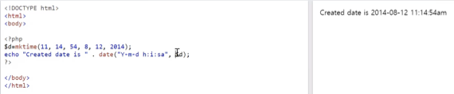
- 그리고 위처럼 특정 날짜를
mktime()을 이용해 unix time(뭐 서기 2021년 이런것마냥 유닉스가 개발된 시점을 기준으로 하는 시간, 1970년 부터 지금까지의 일수를 의미한다) 만들어date()함수에 넣어줄 수도 있다.- 이것을 date함수에 사용하면 저렇게 날짜형식으로 포매팅 할 수 있게 되는 것.
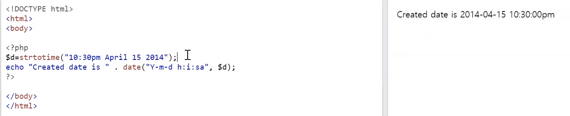
strtotime()함수를 이용해 스트링 값을 unix time으로 변환할 수도 있다.
include, require
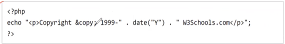
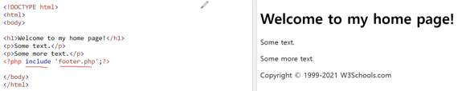
- 위처럼 파일을 include하는 것이 가능함
- php의
include,require은 C-style-include 처럼 전처리시에 복붙되는 느낌이다 - echo같은 실행문이 있으면 바로 실행되고, 변수를 선언해도 해당 변수를 사용하는 것이 가능함 - 불러오는 방법은
include와require이 있는데include는 불러오는데 실패해도 무시하고 할수 있는건 다 하는 반면,require은 실패하면 그 이후의 php는 실행되지 않는 차이점이 있음
File IO
readfile(“path-to-file”): 파일의 내용을 전부 읽어 문자열로 반환fopen(“path-to-file”, “mode”)을 통해 파일을 열 수 있다는 것
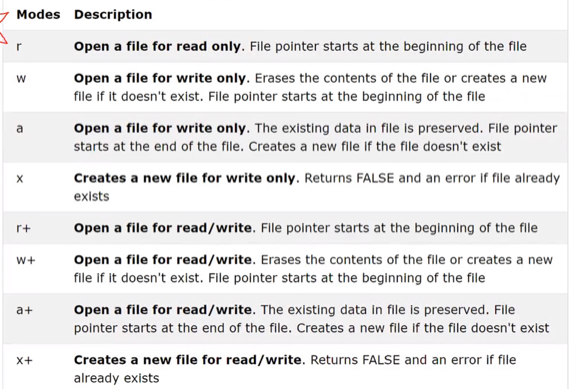
- 이건 mode의 종류다
- 각각의 차이점과 포인터가 어디서부터 시작되는지 잘 숙지하여라
- w는 파일의 처음부터 쓰고 파일이 없으면 새로 만듦
- a는 파일의 끝부터 쓰고 파일이 없으면 새로 만듦
- x는 파일을 새로 만들고 처음부터 쓰며 파일이 있으면 에러
or die(“err msg”)를 통해 exception handling을 할 수 있다는 것fread(_file, _number)을 통해 길이만큼 파일을 읽어올 수 있다는 것filesize(“path-to-file”)을 통해 파일의 길이를 얻을 수 있다는 것fclose(_file)을 통해 파일을 닫을 수 있다는 것fgets(_file)는 파일의 한 줄을 읽고 포인터를 그 다음줄로 옮기는 것feof()는 포인터가 EOF에 도달했는지 - boolean을 반환fgetc(_file)은 파일의 한 문자를 읽고 포인터를 그 다음 문자로 옮김fwrite(_file, “content”)은 파일의 포인터에서부터 한글자씩 적으며 포인터를 움직임- 개행하려면
\n을 써야되는건 자명하다
- 개행하려면
서버에 파일 업로드하기 예제
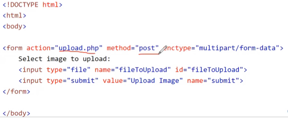
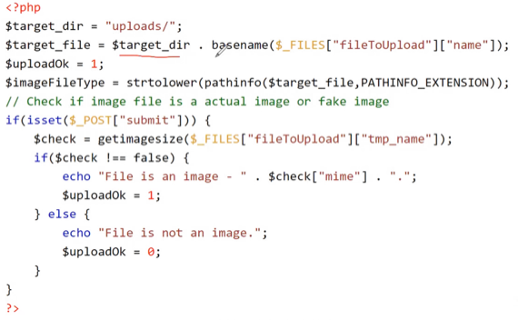
- 일단 위의 예제에서
basename(“path-to-file”, “suffix-to-delete”)는 경로에서 파일의 이름만 가져오고 두번째 인자를 옵션으로 넣어주면 접미사를 제거하는 기능도 해주는 함수다. - 그리고
$_FILES라는 super global 변수는 request로 들어온 파일 객체를 담고 있는 변수이다- 따라서 위의 그림에서처럼
$_FILES[“fileToUpload”]를 이용해“fileToUpload”을 name의 attribute로 가지는 input태그로 입력된 파일의 정보를 불러올 수 있다 - 그리고 뒤이어 나오는
[“name”]를 통해 해당 파일의 이름을 알아낼 수 있고 - 이거 말고도
[“type”]을 통해 파일의 타입을 알아내거나 [“size”]을 통해 파일의 크기을 알아내거나[“tmp_name”]을 통해 서버에 임시로 저장된 파일의 이름을 알아내거나[“error”]을 통해 파일 전송 과정에서의 에러를 알아낼수 있다.
- 따라서 위의 그림에서처럼
pathinfo(“path-to-file”, PATHINFO_EXTENSION)을 통해 해당 경로에 있는 파일의 확장자를 읽어오는 것이 가능하다getimagesize($_FILES["request-param-key"]["tmp_name"])를 통해 이미지 파일인지 검사함과 동시에 이미지의 크기에 관한 정보들을 얻어올 수 있다.file_exists(_file)을 통해 해당 파일객체가 가르키는 경로에 동일한 파일이 있는지 체크할 수 있다.
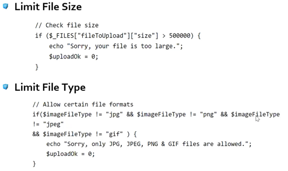
- 그리고 뭐 위와 같은 방식으로 파일 validation을 해줄 수 있다.
- 또한
move_upload_file($_FILES["request-param-key"]["tmp_name"], _file)을 통해 임시 파일을 옮길 수도 있다.
Cookie
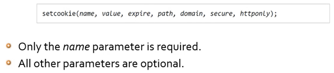
- 문법은 위와 같다
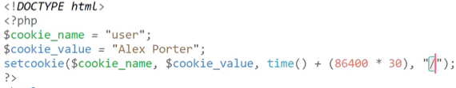
- 주의할점은 쿠키의 이름을 담은 변수는 php문서의 제일 위에 와야한다는 것이다
- path는 쿠키가 유효한 최상위 경로를 말한다.
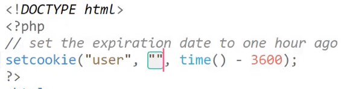
- 삭제는 js에서마냥 유효기간을 앞당겨서 할 수 있다
- 쿠키를 변경하는것도 걍 setcookie를 사용하면 된다
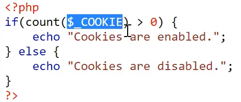
- 쿠키는
$_COOKIE글로벌 변수에 저장되고 count()를 통해 쿠키가 있는지 검사할 수 있다.
Session
- 뭐 알다시피
- 사용자 인증이 끝나면 세션을 열고 알파벳과 숫자로 된 세션 id를 발급하여 클라이언트에게 준다
- 그리고 클라이언트는 그걸 쿠키에 저장해놨다가 인증이 필요한 요청에 해당 id를 쿠키에 실어서 같이 보내게 되고
- 서버에서는 세션id로 이놈이 정상적인 놈인지 확인한 후, 해당 세션에 담겨있는 정보들을 활용하게 되는 것
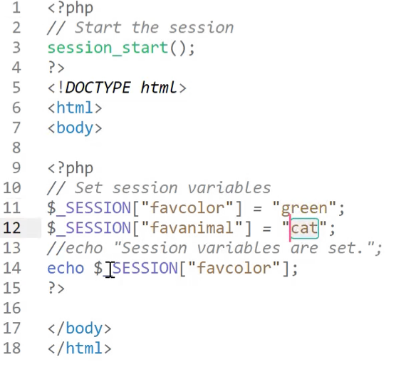
- 뭐 서버에서 세션을 시작하고 여기에 정보를 담는 건 위의 그림처럼 하면 된다.
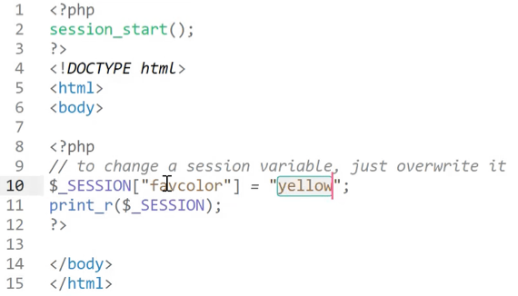
- 뭐 세션을 서버에서의 쿠키처럼 설명하고 있는데 맞는건지는 모르겠긴함
- 그리고 세션도 위 그림처럼 다른 페이지에서도 사용이 가능하다
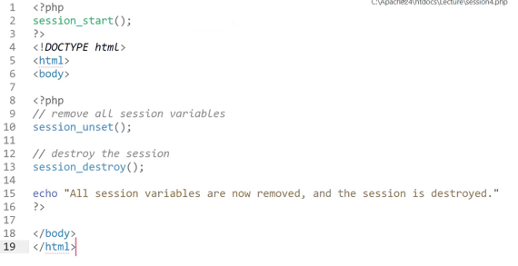
- 그리고 열었던 세션을 닫을때는 위처럼 하면 된댄다
Callbacks
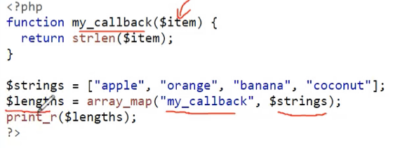
- 뭐 php도 위처럼 함수형 기능을 이용할 수 있고
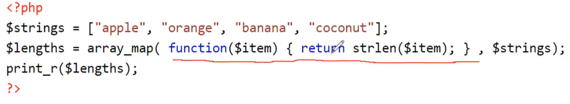
- 위의 그림처럼 익명함수도 가능하다
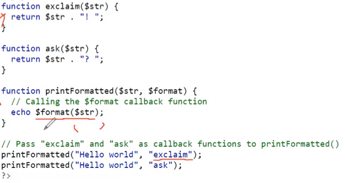
- 뭐 보면 함수형 기능을 제공하는데 다른 언어와의 차이점은
- 함수의 이름을 큰따옴표로 묶으면 해당 객체는 함수객체로서의 역할을 함 - 소괄호를 붙여 함수를 호출할 수 있다는 것
Exception handling
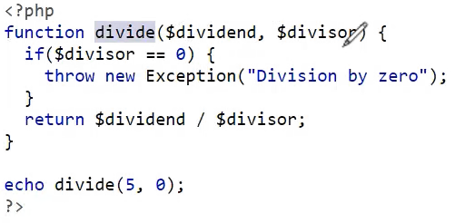
throw new Exception(“msg-for-error”)로 에러를 던질 수 있다.
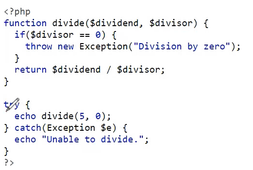
- 그리고 뭐
try{} catch(Exception e) {} finally {}로 에러를 잡을 수 있다
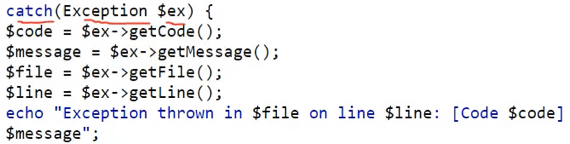
- Exception객체는 위의 예제처럼 활용할 수 있다.